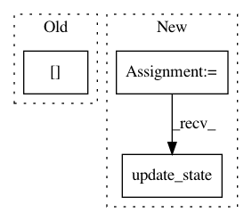

5f9be68993f6f1809804ac373db9d6fb7f397d0f,opennmt/models/sequence_tagger.py,SequenceTagger,compute_metrics,#SequenceTagger#Any#Any#,116
Before Change
recall_metric = tf.metrics.recall(gold_flags, predicted_flags)
precision = precision_metric[0]
recall = recall_metric[0]
f1 = (2 * precision * recall) / (recall + precision)
eval_metric_ops["precision"] = precision_metric
eval_metric_ops["recall"] = recall_metric
After Change
[labels["tags"], predictions["tags"], labels["length"]],
[tf.bool, tf.bool])
f1 = F1()
f1.update_state(gold_flags, predicted_flags)
eval_metric_ops["precision"] = f1.precision
eval_metric_ops["recall"] = f1.recall
eval_metric_ops["f1"] = f1
In pattern: SUPERPATTERN
Frequency: 3
Non-data size: 3
Instances
Project Name: OpenNMT/OpenNMT-tf
Commit Name: 5f9be68993f6f1809804ac373db9d6fb7f397d0f
Time: 2019-04-01
Author: guillaume.klein@systrangroup.com
File Name: opennmt/models/sequence_tagger.py
Class Name: SequenceTagger
Method Name: compute_metrics
Project Name: drckf/paysage
Commit Name: 2f81c7d43d82c65b896d552d758c3b75fe45c558
Time: 2016-11-29
Author: charlesfisher@Charless-MacBook-Pro.local
File Name: paysage/paysage/fit.py
Class Name:
Method Name: basic_train
Project Name: OpenNMT/OpenNMT-tf
Commit Name: 8566b142ddf39eb999e6765a216d54c957f526a3
Time: 2019-04-01
Author: guillaume.klein@systrangroup.com
File Name: opennmt/models/sequence_classifier.py
Class Name: SequenceClassifier
Method Name: compute_metrics